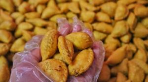
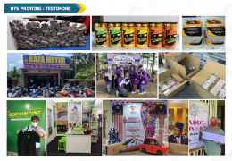
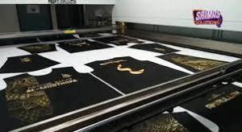
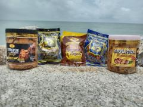
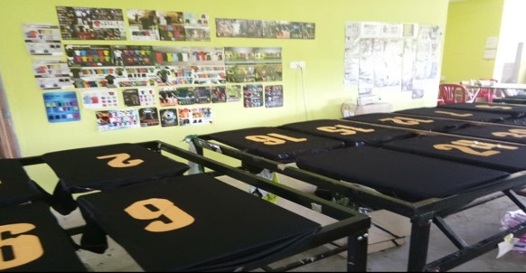
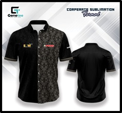
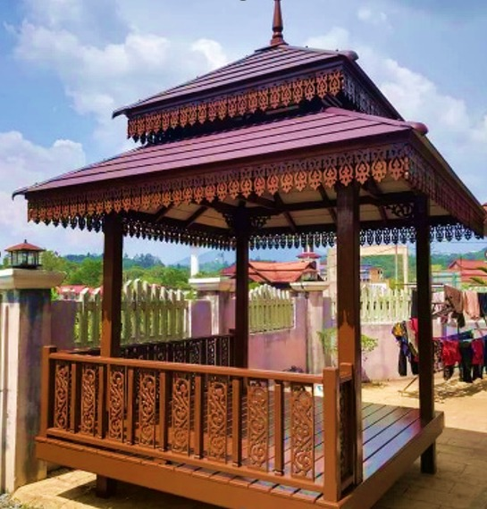

Wan Paizah Bt Wan Hashim, pengusaha projek makanan sejuk beku yang berasal dari Kota Bharu, Kelantan.
Lebih lanjut
Mohd Nurfirwan Bin Ismail, pengusaha projek percetakan yang berasal dari Pasir Mas, Kelantan
Lebih lanjut
Hassan Bin Mustafa, pengusaha projek percetakan yang berasal dari Pasir Mas, Kelantan.
Lebih lanjut
Suriaty Bt Che Ab Latif, pengusaha projek pelbagai keropok segera yang berasal dari Pasir Mas, Kelantan
Lebih lanjut
Nazree bin Ibrahim, pengusaha projek percetakan berasal dari Rantau Panjang, Kelantan
Lebih lanjut
Suraya binti Mohamed, pengusaha projek percetakan berasal dari Pasir Mas, Kelantan
Lebih lanjut
Syed Mohamad Zulkifli bin Syed Mohd Kamaruddin, pengusaha projek perabot berasal dari Rantau Panjang, Kelantan
Lebih lanjut